阅读词表
| 词条 | 拼音 | 类型 | 说明 |
|---|---|---|---|
| 亶父 | dǎn fǔ | person | 古公亶父；周族迁居周原时的首领。 |
| 廼 | nǎi | manual | 同“乃”；《绵》中的古字写法。 |
| 爰 | yuán | manual | 于是、就；《绵》中多次使用的古代虚词。 |
| 皋门 | gāo mén | manual | 古代王宫或城郭的外门。 |
| 夯筑 | hāng zhù | concept | 用夯打方式筑成墙体或台基。 |
| 膴膴 | wǔ wǔ | manual | 土地肥美的样子。 |
| 堇荼 | jǐn tú | manual | 堇菜和苦菜；《绵》用来表现周原土地肥美。 |
| 饴 | yí | manual | 麦芽糖；“堇荼如饴”形容苦菜也甜美。 |
| 捄 | jū | manual | 聚集泥土；见《绵》“捄之陾陾”。 |
| 陾陾 | réng réng | manual | 众多的样子；此处形容筑墙时聚土。 |
| 薨薨 | hōng hōng | manual | 众人劳作或筑墙发出的声音。 |
| 冯冯 | píng píng | manual | 墙体坚实或劳作声盛大的样子。 |
| 鼛 | gāo | manual | 古代用于役事的大鼓。 |
| 翳 | yì | manual | 倒伏或遮蔽的树木。 |
| 閟 | bì | manual | 幽深、神秘；《诗经·鲁颂》篇名《閟宫》中的用字。 |
| 瓜瓞 | guā dié | manual | 绵延生长的大小瓜；《绵》以瓜蔓比喻周族繁衍。 |
| 水浒 | shuǐ hǔ | manual | 水边；《绵》“率西水浒”中的古义。 |
| 聿 | yù | manual | 于是、遂；《绵》“聿来胥宇”中的虚词。 |
| 胥宇 | xū yǔ | manual | 察看可供居住的地方。 |
| 徂 | cú | manual | 往、到；“自西徂东”即从西向东。 |
| 俾 | bǐ | manual | 使、让。 |
| 伉 | kàng | manual | 高大；“皋门有伉”形容门高大。 |
| 将将 | qiāng qiāng | manual | 庄严盛大的样子。 |
| 冢土 | zhǒng tǔ | manual | 大社；古代祭祀土地神的场所。 |
| 殄 | tiǎn | manual | 消灭、断绝。 |
| 愠 | yùn | manual | 怨恨。 |
| 柞棫 | zuò yù | manual | 柞树和棫树。 |
| 駾 | tuì | manual | 迅速奔逃。 |
| 喙 | huì | manual | 疲困喘息的样子。 |
| 蹶 | guì | manual | 使动、改变；“文王蹶厥生”指文王改变其争端状态。 |
| 菑 | zī | manual | 直立的枯树；《皇矣》中指尚未清除的死树。 |
| 栵 | lì | manual | 成行生长的树木。 |
| 柽 | chēng | manual | 柽柳。 |
| 椐 | jū | manual | 古代树名；一说即灵寿木。 |
| 檿 | yǎn | manual | 山桑。 |
| 柘 | zhè | manual | 柘树。 |
| 僇 | lù | manual | 通“戮”，羞辱；见《史记·殷本纪》“乃僇辱之”。 |
| 儇 | xuān | manual | 轻捷、聪慧；此处为《国语》所列古姓氏用字。 |
| 孔伋 | kǒng jí | person | 孔子之孙，字子思；“伋”读jí。 |
| 北土 | běi tǔ | place | 文中指商朝北方边地。 |
| 虞芮 | yú ruì | place | 周代虞、芮两个诸侯国的合称。 |
| 蹂躏 | róu lìn | rare_word | 践踏摧残；文中形容武乙与“天神”人偶搏斗后的羞辱行为。 |
| 卜骨 | bǔ gǔ | artifact | 用于占卜的兽骨。 |
| 肩胛骨 | jiān jiǎ gǔ | concept | 动物或人的肩部骨骼，常被加工为卜骨。 |
| 宗教改革 | zōng jiào gǎi gé | 项目词典 | 文中指试图以埋藏器物替代杀人杀牲的祭祀变革。 |
| 甲骨卜辞 | jiǎ gǔ bǔ cí | 项目词典 | 商代刻写在甲骨上的占卜文字。 | 刻写在龟甲兽骨上的占卜文字。 | 刻写在甲骨上的占卜记录。 | 刻写在龟甲兽骨上的占卜辞句。 |
| 周文王 | zhōu wén wáng | 项目词典 | 周族领袖姬昌。 |
| 老牛坡 | lǎo niú pō | 项目词典 | 西安附近商代遗址，文中涉及商人据点和人祭。 | 陕西西安商代遗址。 |
| 上帝 | shàng dì | 项目词典 | 商周宗教中的最高神。 |
| 人牲 | rén shēng | 项目词典 | 被用于祭祀的人。 | 被用于祭祀或献祭的人。 | 被杀用于祭祀的人。 |
| 儒家 | rú jiā | 项目词典 | 以孔子思想及相关经典传统为核心的学派。 |
| 先后 | xiān hòu | 项目词典 | 《盘庚》引文中指已故先王。 |
| 公刘 | gōng liú | 项目词典 | 周族先公；《公刘》叙述其率族人迁居豳地并开创基业。 |
| 分封 | fēn fēng | 项目词典 | 周初封邦建国制度。 |
| 卜辞 | bǔ cí | 项目词典 | 甲骨占卜后刻写或记录的辞句。 | 甲骨上记录占卜的文字。 | 占卜时刻写或记录的辞句。 |
| 卦辞 | guà cí | 项目词典 | 解释一卦吉凶和意义的文字。 |
| 后稷 | hòu jì | 项目词典 | 周族始祖传说中的农业神和祖先。 |
| 周原 | zhōu yuán | 项目词典 | 关中地区周族的重要活动中心。 | 关中地区周族重要遗址和活动中心。 | 周族核心区域。 |
| 周昌 | zhōu chāng | 项目词典 | 周文王姬昌，书中常称周昌。 | 周文王姬昌。 | 周文王之名。 |
| 周易 | zhōu yì | 项目词典 | 以《易经》及其传文构成的古代经典。 | 《易经》与后世《易传》合称的经典。 |
| 商族 | shāng zú | 项目词典 | 商王朝建立前后的族群共同体。 |
| 商王 | shāng wáng | 项目词典 | 商朝王。 |
| 土著 | tǔ zhù | 项目词典 | 本地原有居民或族群。 |
| 填土 | tián tǔ | 项目词典 | 填入坑穴或遗迹中的土层。 |
| 夯土 | hāng tǔ | 项目词典 | 把土层层夯实形成建筑基础或城墙的技术。 |
| 姜嫄 | jiāng yuán | 项目词典 | 周族始祖传说中的女性始祖。 | 周人始祖母，传说为有邰氏之女、后稷之母。 |
| 孔子 | kǒng zǐ | 项目词典 | 春秋时期思想家、教育家，儒家学派的重要奠基者。 |
| 局促 | jú cù | 项目词典 | 狭小、不舒展。 |
| 崇国 | chóng guó | 项目词典 | 商周之际西土方国。 |
| 巫术 | wū shù | 项目词典 | 古代借助神秘仪式影响现实的信仰行为。 | 借助神秘仪式影响现实的信仰行为。 |
| 帝辛 | dì xīn | 项目词典 | 商纣王的王名。 |
| 征伐 | zhēng fá | 项目词典 | 出兵讨伐。 |
| 成周 | chéng zhōu | 项目词典 | 西周东都。 |
| 掌故 | zhǎng gù | 项目词典 | 历史故事、典故。 |
| 易经 | yì jīng | 项目词典 | 文王卦爻辞体系，书中用以讨论翦商谋略。 | 文王卦爻辞体系。 | 以六十四卦及卦爻辞为主体的古代经典。 |
| 春秋 | chūn qiū | 项目词典 | 孔子时代相关的编年史经典。 |
| 殷商 | yīn shāng | 项目词典 | 商朝后期文化和政权。 | 商代后期以殷墟为中心的商王朝阶段。 |
| 殷都 | yīn dū | 项目词典 | 商朝后期都城区域，今安阳殷墟一带。 | 商朝后期都城区域。 | 晚商都城，通常指安阳殷墟。 |
| 海贝 | hǎi bèi | 项目词典 | 贝壳，古代可作装饰、随葬品或货币。 |
| 爻辞 | yáo cí | 项目词典 | 解释每一爻吉凶和意义的文字。 |
| 版筑 | bǎn zhù | 项目词典 | 夹板填土后层层夯实的筑墙方法。 |
| 献祭 | xiàn jì | 项目词典 | 把祭品奉献给神灵或祖先。 | 向神灵、祖先等奉献祭品。 |
| 纣王 | zhòu wáng | 项目词典 | 商朝末代王帝辛。 | 商末王，文中讨论其暴虐和人祭。 |
| 羌人 | qiāng rén | 项目词典 | 西方族群，常见于商代卜辞。 |
| 翦商 | jiǎn shāng | 项目词典 | 周人剪灭商朝的政治行动。 | 剪除商朝，文中为全书核心主题。 |
| 蛮荒 | mán huāng | 项目词典 | 荒远未开发。 |
| 西土 | xī tǔ | 项目词典 | 周族所在的西方地区。 |
| 诗经 | shī jīng | 项目词典 | 中国古代诗歌总集，儒家经典之一。 |
| 迁徙 | qiān xǐ | 项目词典 | 群体从一地迁移到另一地。 |
| 遗存 | yí cún | 项目词典 | 古代活动留下的遗物、遗迹或现象。 |
| 酋长 | qiú zhǎng | 项目词典 | 部落或地方共同体的首领。 |
| 高亨 | gāo hēng | 项目词典 | 现代《周易》研究学者。 | 文史学者，文中引用其对《易经》的解释。 |
青铜器词表
| 器名 | 拼音 | 类型 | 说明 |
|---|---|---|---|
| 暂无青铜器词表 | |||
章节导读札记
| 主题 | 札记 | 操作 |
|---|---|---|
| 暂无章节导读札记 | ||
用户札记
| 类型 | 页 | 内容 |
|---|---|---|
| 暂无用户札记 | ||
原书阅读器页 325原书物理 PDF 页 323印刷页 311
第十六章成为商朝爪牙：去周原
在商代诸王之中，纣王的知名度最高，他有着亡国之君的各种经典表现。其实，还有一位比纣王行为更夸张的商王，这就是纣王的曾祖父武乙（第二十七王）。而且，武乙还把周族纳入商朝的附庸之列，这是姬周和殷商之间长达半个多世纪故事的开端。
在史书中，武乙王是个非常另类的商王。他凶悍强健，不遵守商人传统的宗教原则，甚至对至高的“天神”不敬。《史记》对他的描写近乎漫画：武乙下令制作了一个叫“天神”的人偶，然后表演和人偶摔跤搏斗，结局自然是武乙王大胜，人偶惨遭蹂躏。当然，他更有创意的戮神行为是“射天”，命人用皮袋装满血并悬挂在高处，放箭射去，鲜血淋漓而下，象征天神被射死。[[fn:1]] 这种荒唐表演的背后，是人类原始宗教中的“交感巫术”，一种用杀死象征物达到杀死本体的魔法。[[editor-fn:1]]
不过，司马迁写《史记》时，商朝灭亡已经有一千年，他对商朝的描写难免会有些走样。在甲骨卜辞里，商人崇拜的并不是天，而是上帝；到西周，人们才把天和上帝等同起来。所以，还原到武乙时代，他殴打和射猎的是商人敬畏的上帝。[[fn:2]]
武乙时期的甲骨卜辞显示，商王朝最主要的军事对手有两个：一个是北土的“方”人；一个是西部的“刀方”人，刀可能通“召、即属于西部羌人的召部族。
当初，武丁王开启西部扩张，在老牛坡分封了崇侯之国；近百年后，武乙王的重归，则让崇国更繁荣。此外，武乙王还做了一个当时看似微不足道的决定：接纳了一个从北部山地迁来的小部落，也就是姬姓周族，允许他们在周原定居，充当商朝的微末附庸。
〔编者注1〕交感巫术是一种基于“同类相生”和“接触感应”原理的古代巫术概念，主要分为顺势巫术（模拟巫术）和接触巫术两类。该概念由英国人类学家詹姆斯·弗雷泽在其著作《金枝》中系统提出。
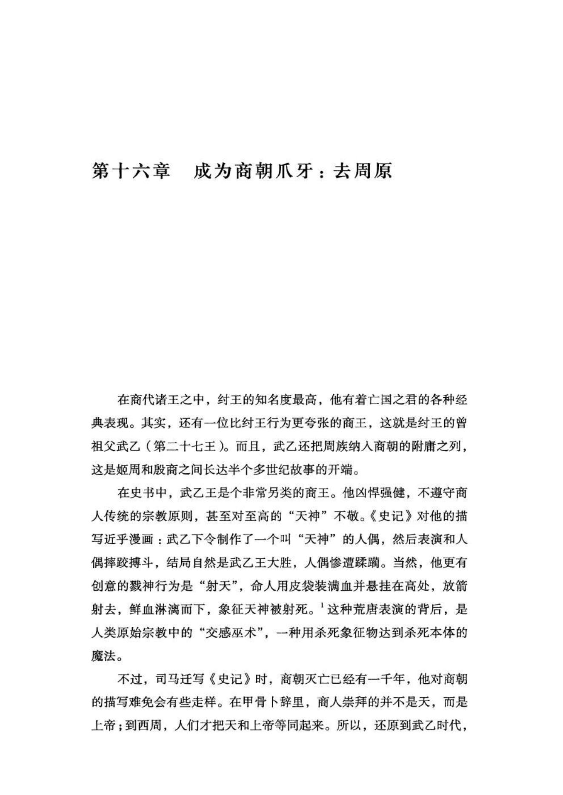
原书阅读器页 326原书物理 PDF 页 324印刷页 312
不速之客来到窑洞
对周族人来说，从豳地-碾子坡迁居到周原是件大事，后世的史诗经常歌颂此事。当时的周族首领，是古公亶父。不过，后世周人并不愿提及此次迁徙的商朝因素，需要我们从文献里抽丝剥茧进行还原。
先来看周人的官方叙事。
亶父为何要带族人离开豳地，去往周原？史书的说法是，周族受到了戎狄的威胁。孔子之孙孔伋（字子思）曾讲过一个掌故：当初，狄人来攻击豳地的周人，勒索财物，族长亶父命令族人满足狄人的要求；但狄人还想获得豳的土地和人口，又发动进攻，周族人决心抵抗，但古公说：“土地、民众属于我，或者属于戎狄，又有什么区别？如果为了我开战而死人，我这首领又有什么意义？ ”于是，亶父拄着拐杖离开了豳地。他翻过梁山，来到了周原。豳地有很多人都追随着老族长，跟着搬家而来的有三千辆马车。从此，周人便在周原定居了下来。[[fn:3]]
这里记载的三千辆马车，实在过于夸张，因为从碾子坡的考古看，豳地时期的周人还没有马车。《史记•周本纪》就删去了三千马车的说法，只保留了豳人“扶老携幼”追随亶父。
这个版本的迁居故事明显经过后世儒家的加工，突出了仁义的力量。不过，它还是给我们提供了一些信息：一是周人迁居的时候，亶父拄着拐杖，说明他年纪已经比较大了，而他的几个儿子应该都已经成年；另一个信息则是，并非所有的族人都追随亶父到了周原，还有部分的人留在了豳地。碾子坡的墓地布局表明，先周晚期墓的北侧是西周和东周墓地，说明这里一直有人居住，聚落生活一直保持着连续性；明显发生变化的是墓葬的数量：先周早期墓葬有93座，晚期墓葬有139座，相比之下，西周时期的墓葬仅有45座，比之前少了很多，说明当时聚落人口规模发生了骤减，而原因可能就是，在亶父时代，多数居民都追随族长迁徙到周原去了。
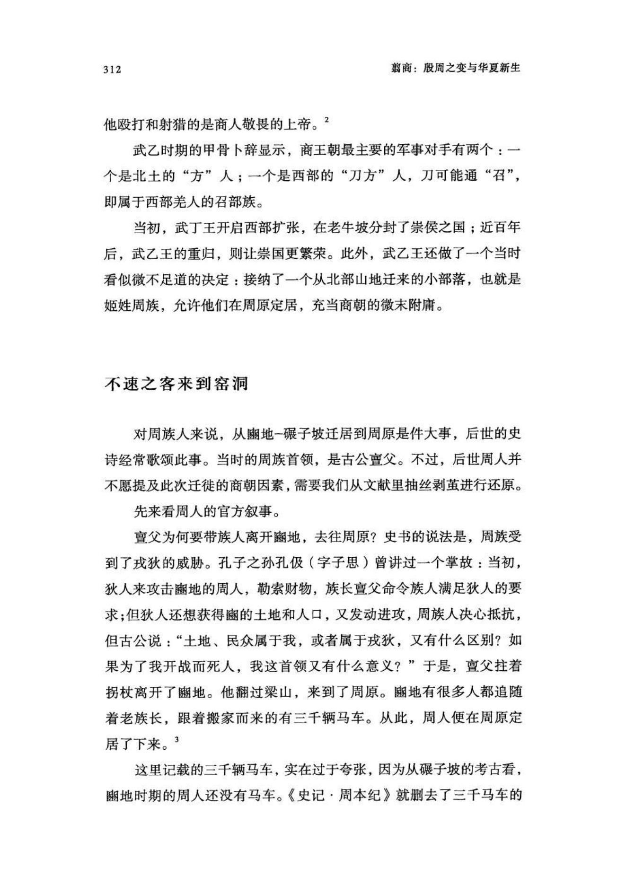
原书阅读器页 327原书物理 PDF 页 325印刷页 313
子思讲的这个版本，虽然有后人添加的道德色彩，但仍显露了周人早期部落时代的特点：族长没有绝对专断的权力，部落民众有较大自主权，他们可以决定是否迁徙。
但史书所说的戎狄袭击豳地，在考古中则找不到迹象。碾子坡聚落一直在延续，墓葬随葬品还有增加，每座西周墓一般都随葬有几件陶器，说明在亶父带部分族人迁走之后，豳地并没有发生过外来征服和剧变，甚至居民的生活水平还在持续提高。
既然豳地-碾子坡并没有什么外来威胁，为什么亶父和族人还要迁徙？其实，这是武乙王西部大扩张的副产品：商朝希望招募一个仆从部族，让他们定居到周原，充当商朝的附庸和马前卒。这才是姬周族来到周原定居的根本原因，因而也是周人灭商后不愿再提起的黑历史。
但有一份文献暗藏着这段往事。在周文王创作的《易经》中，有些卦的爻辞涉及当年亶父迁徙周原这一事件。至于《易经》为何会有如此翔实的周族历史信息，后面我们会对此进行分析。
这里先来看益卦。[[editor-fn:2]]这个卦名，顾名思义，就是获得利益。它的六四爻辞是：“中行告公从，利用为依迁国。”高亨认为，“依”是“殷”的通假。[[fn:4]] 和周人首领打交道的这位“中行”，在《易经》中出现过好几次。“中行”的字面本意是行军最中间的行列，可能代指战车，因为战车走在道路中间，步卒走在两边。所以，整句翻译为白话是，有人乘着战车来告诉公（亶父）：“跟我走，为了殷商朝，你们这个小国搬迁一下，这对你们也大有好处。”
〔编者注2〕益卦，见 https://ctext.org/wiki.pl?if=gb&chapter=333654
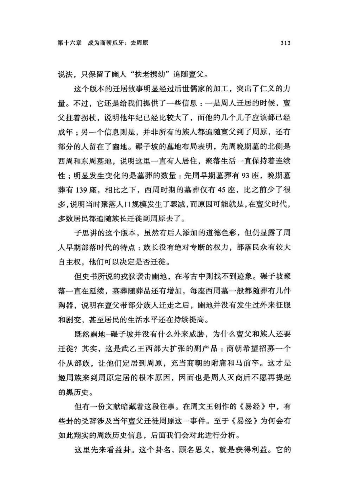
原书阅读器页 328原书物理 PDF 页 326印刷页 314
这位乘马拉战车深入豳地、劝说姬周族首领搬迁的人，很可能是崇国的国君——崇侯。崇国是商朝经略西土的基地，武乙王亲征关中自然需要崇侯提出各种具体方案。
接着看需卦[[editor-fn:3]]。该卦的主要内容是周人投靠商朝之后为商朝捕猎俘虏的各种经验。它的上六爻辞比较特殊，记载的不是捕俘，而是几位贸然来访者：
入于穴，有不速之客三人来，敬之，终吉。
穴，是亶父在豳地的窑洞。《诗经•大雅•绵》描写过豳地生活：“古公亶父，陶复陶穴，未有家室。”[[fn:5]] 意思是说，亶父住在从黄土上掏出的洞穴里，还没有建造房屋。
在爻辞里，三位不速之客来到了族长的窑洞，虽然亶父不知道这三人的用意，但还是以礼相待，最终的结果是，大吉。
不速之客为什么有三位？因为殷商时代的马车只能承载三个人。需卦把这一条放在了最后（上六爻），因为全卦主要是讲周人为商朝捕俘的经历和经验，而这条则是追溯他们为商朝服务的起因：当初乘马车而来并钻进亶父窑洞的那三个陌生人。
再看升卦[[editor-fn:4]]。该卦的内容都是关于遇到机会而获得升迁的。它的卦辞是：“元亨，用见大人，勿恤。南征吉。”意为，举行大祭祀，去拜见大人物（商王），不需要担心，去南方的征途吉利。
对于豳地-碾子坡来说，周原在南方，亶父去往那里就是南征。可能当时武乙王驻扎在周原，正在研究如何利用这块荒废的土地。至于亶父具体的行程，应当是沿着泾河河谷向东南方向，出了山地之后再折向西，然后到达周原。
〔编者注3〕需卦，见 https://ctext.org/wiki.pl?if=gb&chapter=21567
〔编者注4〕升卦，见https://ctext.org/wiki.pl?if=gb&chapter=56014
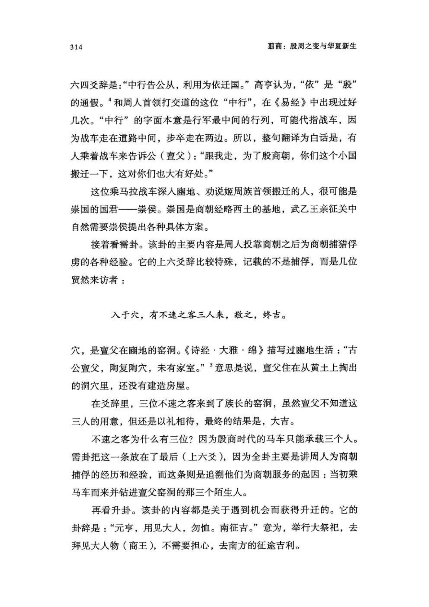
原书阅读器页 329原书物理 PDF 页 327印刷页 315
老族长的新领地
升卦的六四爻辞是：“王用亨于歧山。吉，无咎。”说的是亶父到达岐山下的周原，拜见了武乙王，武乙举行祭祀，同时招待了这位异族番邦的小头领。
周人的史诗《诗经•绵》[[editor-fn:5]]，记载的就是亶父带领周族迁居到周原的大事件。
绵绵瓜瓞，民之初生，自土沮漆。古公亶父，陶复陶冗，未有家室。
古公亶父，来朝走马。率西水浒，至于岐下。爰及姜女，聿来胥宇。
周原膴膴，堇荼如饴。爰始爰谋，爰契我龟。曰止曰时，筑室于兹。
开头部分，是亶父和夫人对周原的首次考察。他的夫人是“姜女”，也就是在豳地娶的姜姓（羌人）女子。豳地周边是姜姓戎人，这种姬姜联姻很正常。后世周人尊称亶父夫人为“大姜（太姜）”，她生了泰伯、仲雍和季历。
亶父夫妇可能是骑着马跟随“中行”的战车出发的，所谓“古公亶父，来朝走马”。去拜见王才是“朝”，史诗中虽略去了商王武乙，但用词仍留有痕迹。他们出山地之后，沿着一片水泊向西走，就到了岐山之下的周原。
益卦的六二爻和六三爻也是记录这次朝见的。六二爻曰：“或益之十朋之龟，弗克违，永贞吉。王用享于帝，吉。”说的是有人赠给（亶父）一只占卜用的龟甲，价值二十串海贝，用它占卜得到的结果会很吉利，不可违抗；（武乙）王还在这里祭祀了上帝，很吉利。羌、周等西部族群本来没有用龟甲占卜的习惯，他们只会用牛马的肩胛骨，碾子坡虽出土了很多这类卜骨，但从没有龟甲。龟甲占卜是商人带来的习惯。
〔编者注5〕毛诗序：“《绵》，文王之兴，本由大王也。” https://zh.wikisource.org/zh-hans/%E8%A9%A9%E7%B6%93/%E7%B7%9C
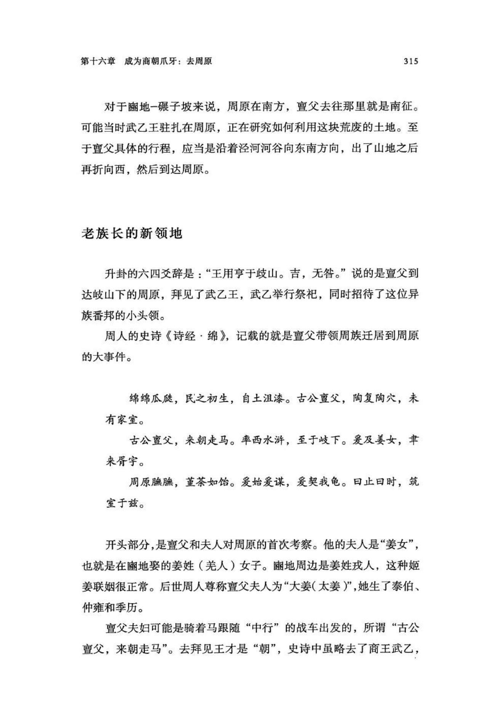
原书阅读器页 330原书物理 PDF 页 328印刷页 316
六三爻记载的是亶父朝见武丁王的细节：“中行告公用圭。”意思是，那位招募他来的“中行”教他如何用玉圭朝拜王。这条爻辞还说，用益卦来占卜战争，没有灾祸，会捕获俘虏。[[fn:6]]
到了周原后，亶父认真地观察环境，发现这里有广阔而平坦的草场和树林，很容易开垦成大片农田，长出的苦菜也像麦芽糖那样甜，正所谓“周原膴膴，堇荼如饴"。总之，周原比豳地-碾子坡局促的沟谷好得多，占有和开发这里，周族人口会增殖很多倍。于是，亶父开始考虑迁徙大业。他在龟甲上凿了小坑进行占卜（爰契我龟），结果是，就在这里留下，现在正是好时机，应当在这里修建房屋，正所谓：“曰止曰时，筑室于兹。”
其实，亶父和姬周族在这之前对周原也会有所了解，毕竟碾子坡到这里不算太远。但之前这里不安全，不仅有满怀敌意的野蛮部落在此活动，强大的商朝-崇国军队也时而前来屠戮破坏。如今有了商王的首肯，这就完全不同了。
廼慰廼止，廼左廼右，廼疆廼理，廼宣廼亩。自西徂东，周爰执事。
乃召司空，乃召司徒，俾立室家。其绳则直，缩版以载，作庙翼翼。
捄之陾陾，度之薨薨，筑之登登，削屡冯冯。百堵皆兴，鼛鼓弗胜。
廼立皋门，皋门有伉。廼立应门，应门将将。廼立冢土，戎丑攸行。
肆不殄厥愠，亦不陨厥问。柞棫拔矣，行道兑矣。混夷駾矣，维其喙矣！
虞芮质厥成，文王蹶厥生。予曰有疏附，予曰有先后。予曰有奔奏，予曰有御侮！
[[editor-fn:6]]
最后，《诗经•绵》用了很大的篇幅来记录周原的建设工作。亶父一路安慰追随他的民众，最后在周原停下来。他先在原野上规划，确定各宗族占有的疆界以及村舍和田亩的方位，然后是各种分工和任命，如司土（司徒）和司工（司空），让他们带领民众建设家宅。最先建好的是周族的宗庙，供奉自姜嫄、后稷以下的历代族长。
〔编者注6〕《诗经·大雅·绵》的校对综合了两个版本：维基文库和中國哲學書電子化計劃。
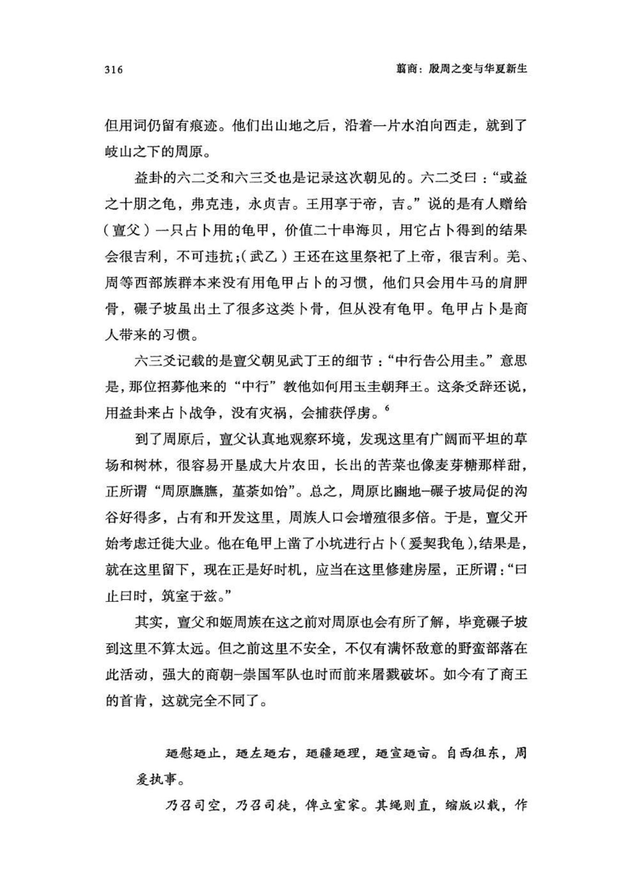
原书阅读器页 331原书物理 PDF 页 329印刷页 317
和《生民》歌唱后稷的农耕事业以及《公刘》颂扬公刘迁居豳地一样，《绵》也洋溢着欢快、昂扬的情绪。这些史诗都喜欢用排比，罗列先民的种种劳作场景。几乎所有的建筑都是版筑夯土墙，先拉绳子画出笔直的墙基，再埋柱子，固定两面木版，中间填土夯筑牢固，然后固定更高一层木版，继续向上夯筑。
夯土版筑需要密集的协作劳动，周人便唱起节奏明快的歌谣来协调动作。周人史诗的四字句，很可能就源自集体劳作时的“夯歌”。当上百堵土墙同时动工，轰隆隆的夯筑声比鳄鱼皮鼓还响亮："捄之陾陾，度之薨薨。筑之登登，削屡冯冯。百堵皆兴，鼛鼓弗胜。”
周人还建起“皋门”和“应门”，说明中心聚落有两层土墙和环壕防御。周原考古还没有发现先周夯土城墙，甚至连亶父时期的建筑遗存也没有。可能在立足之初，周人的工程建设规模还很有限，能留下的遗迹更是微乎其微。但亶父时期的周族，像是一颗种子，体量虽小，但只要落在合适的土壤里，就有长大的可能。
《诗经》还记载说，周族初到周原时，这里的原野上长满了树林和灌木，并且有和周人敌对的土著部族“混夷”和“串夷”。[[fn:7]] 所以，周人在砍伐树林上投入了很多劳作，他们挖掘土壤里的树根，平整土地，开垦农田，而当树林消失，串夷部落就逃窜走了。
作之屏之，其菑其翳。修之平之，其灌其栵。启之辟之，其柽其椐。攘之剔之，其檿其柘。帝迁明德，串夷载路。天立厥配，受命既固。（《诗经•大雅•皇矣》）[[editor-fn:7]]
〔编者注7〕《诗经·大雅·皇矣》，百度百科，见 https://baike.baidu.com/item/%E5%A4%A7%E9%9B%85%C2%B7%E7%9A%87%E7%9F%A3/2134135
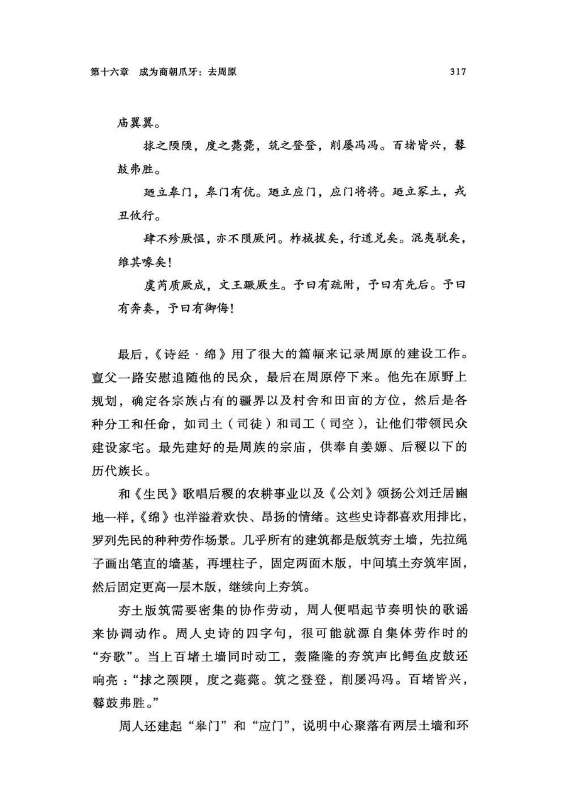
原书阅读器页 332原书物理 PDF 页 330印刷页 318
在后世周人的史诗里，亶父被尊为“大王”（太王，古老的王），他迁居岐山之阳的周原，也被描述成周人“翦商”事业的开端：
后稷之孙，实维大王。居岐之阳，实始翦商。（《诗经•鲁颂•閟宫》）
〔按语：閟，通“祕”，神。〕
但在亶父的时代，周族还完全没有挑战商朝的可能性，也不可能有称王的非分之想，这应该都是周朝建立之后对历史的改造。不过，这首史诗措辞颇有些狡猾，它说亶父“事实上开始了翦商大业”（实始翦商），其实正是为了遮掩当时还没有这种现实可行性。
迁居周原之后，周族并非一切顺利，尤其族长家还发生了分裂。
出走的兄长，远来的妻子
史书记载，亶父至少有三个儿子：泰伯、仲雍和季历。亶父想把族长之位传给幼子季历，于是两位长兄高风亮节，离开周族去了南方蛮族之中生活，后来，他们的后裔建立了吴国。
太伯、仲雍二人乃奔荆蛮，文身断发，示不可用，以避季历。（《史记•吴太伯世家》）
这段记载引发了很大的争议，因为关中的周原和江南的吴相隔太遥远了。有些史家认为，泰伯和仲雍逃往的应该是山西南部的虞国，也有人说是关中西端的宝鸡一带。[[fn:8]]
两位兄长的行踪难有定论，但兄弟三人决裂的原因，很可能比史书记载的要复杂。
武乙王恩准姬周族迁居到周原是有条件的，立足安居之后，周族人需要承担相应的义务，这便是替商朝捕猎人牲，以供商王献祭。
甲骨文中用于献祭的羌人，是周人的同宗、近邻和联姻盟友。因此，为商朝捕猎羌人（周人文献里的姜姓戎人）并不符合周人的传统伦理。这可能是泰伯、仲雍与父亲决裂的根源，他们希望躲开这件可怕的事。
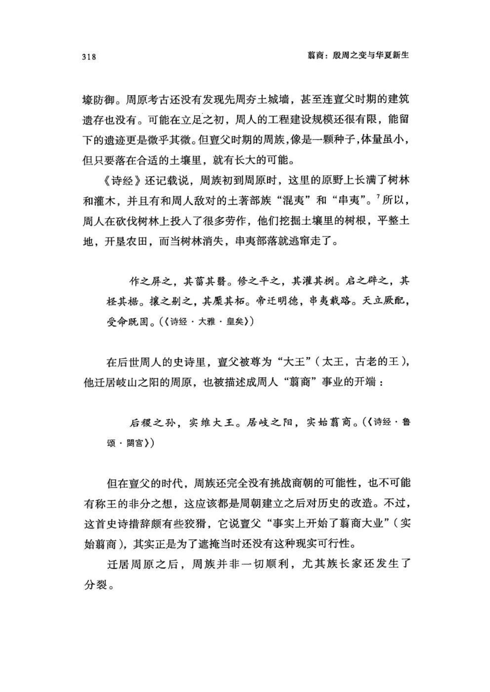
原书阅读器页 333原书物理 PDF 页 331印刷页 319
而幼弟季历则和父亲站在一起。毕竟，只有依附强大的商朝，周族才有发展的机会。或者说，通过亶父的朝见，周族上层在见识了商朝发达的战争和统治技术后受到巨大震撼，他们已无法满足那种蛮荒深山中的生活。
后来，季历继承了父亲的族长之位。对季历来说，在作为继承人和族长的时期，他最主要的工作是征伐各种戎人，给商朝缴纳俘虏。传世的史书虽没有记载这些，但4世纪初（西晋）的《竹书纪年》里记载了一些季历的事迹。[[fn:9]]
据《竹书纪年》，武乙王三十四年，季历到殷都朝见，被王赐予土地三十里，玉器十套，马八匹。这三十里土地很可能在商都近郊，以作为季历在殷都生活的封邑。看来季历获得了武乙王的赏识。
为了持续获得商朝支持，周族必须为商王征战，缴纳“血税”。季历在主持周族的十几年里，几乎一直带着部属在外面征讨，这也使周族变成了一个高度武装化且热衷于战争与劫掠的部族。
武乙王三十五年，这位好战且慢神的王再次亲征关中，周族则为商王充当马前卒，大力征讨周边部族。据《竹书纪年》，在这一年，季历的征伐获得重大战果，他率军进攻“西落鬼戎”，可能是山西和陕西两省之间的土著部落，战果是俘获了二十位“翟（狄）王”。
文王的未济卦九四爻涉及了这一事件：
贞吉，悔亡。震，用伐鬼方，三年有赏于大国。
这句爻辞的大意是说，季历的征战虽然艰难，但战果颇丰，周族也因此更得到商王朝（大国）的赏识，似乎前途一片光明。但武乙王却在此次巡视和亲征中离奇地死亡，据《史记・殷本纪》：“武乙猎于河渭之间，暴雷，武乙震死。”“震死”，就是被雷电劈死。未济卦九四爻辞中的“震”似乎也与此有关。
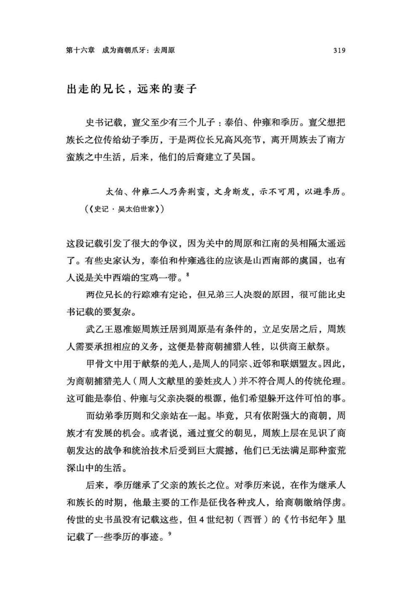
原书阅读器页 334原书物理 PDF 页 332印刷页 320
武乙王暴死之后，其子文丁（第二十八王）继位。[[fn:10]]
文丁二年，季历再次带领族人远征，“伐燕京之戎”，结果遭遇惨败。“燕京”，古代注家解释为山西太原一带。对于周族来说，这是一次跨越黄河、进入汾河上游的远征，所以周人不可能占领如此遥远的土地，战争目的应当还是捕猎当地土著向商朝上贡。
文丁四年，周人又进攻“余无之戎”，获胜，商朝授予季历“牧师”头衔。周人史诗虽一直强调自己是农耕文明，但在商朝看来，它的特点还是畜牧业比较发达。
此后，季历接连取得战果：七年，伐“始呼之戎”，获胜；十一年，伐“翳徒之戎”，俘获三名酋长。
季历还从挚国迎娶了妻子。挚是个东方小国，族姓为“任”。这位妻子被后世周人称为“大任（太任）”，她是当时挚国国君的二女儿（挚仲氏任）。后世注家解释，挚国在今河南省汝南一带，属于殷商的南土，一个附属于殷商的土著小邦，知名度很低，记载非常稀少。不过在亶父和季历时代，这大概是周族能攀附的离商朝最近的婚事。[[fn:11]]
在《诗经•大雅•大明》中，周人向西土各部族宣称，这位新夫人是从殷商王朝嫁过来的，暗示她是来自商王家族的公主：
挚仲氏任，自彼殷商，来嫁于周，曰嫔于京。乃及王季，维德之行。大任有身，生此文王。
但周人这个说法有很多漏洞。商王家族的族姓，是“子”；而挚国的族姓，却是“任”。这说明挚国和商王没有同宗关系。从甲骨卜辞来看，商王家族基本实行族内婚，极少和蛮族藩属通婚。
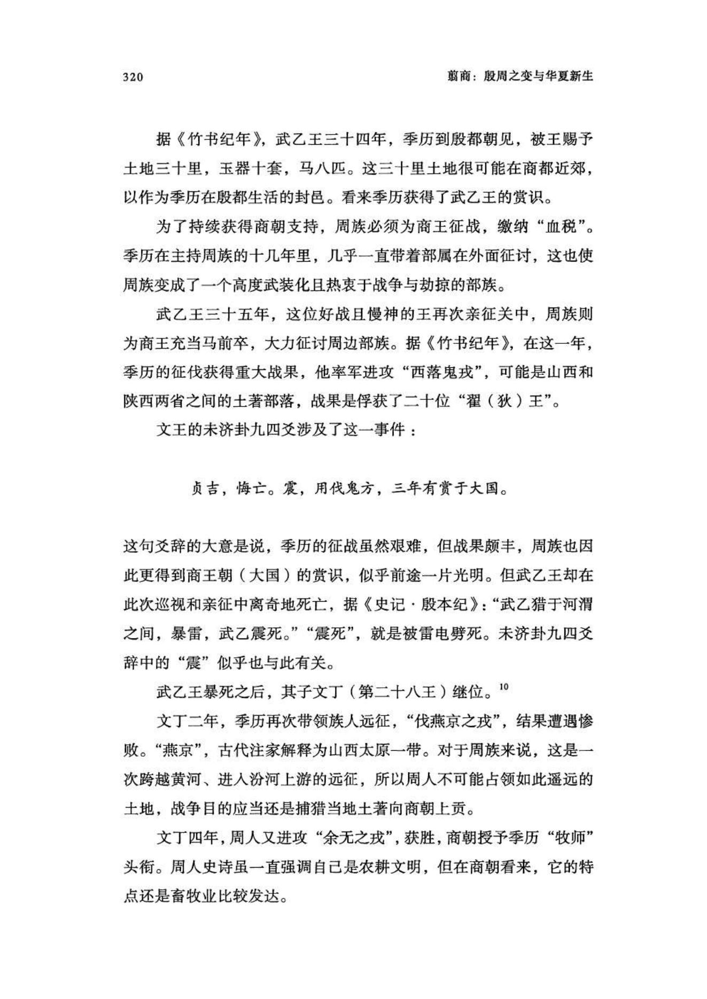
原书阅读器页 335原书物理 PDF 页 333印刷页 321
自从迁居周原，亶父和季历先后带领周族四处扩张和捕捉俘虏，自然和周边族群的关系很差。为此，他们急需用商朝的旗号壮大自己的声势，以震慑周边各族。如此，从东方娶来的夫人自然要派上用场。西土各族群对商朝内部情况很不了解，周人的吹嘘也许能起到一定作用。
从另一面说，迎娶挚国的公主，是周族头领有心向化的表现。在商人看来，刚从豳地-碾子坡迁出来的周族，近乎生番；而挚国，则更接近中原文化圈，国君家族应当比较商化，可能会使用商人的文字和官方语音，如此，新娘大任给季历和周族带来的影响是深远的，特别是她生了一个叫周昌的儿子，也就是后来的文王。
母亲对儿子的影响是全方位的。周昌成长的环境，肯定兼有商和周两种文化氛围，尤其是自幼就可以说商朝语言，书写商人的文字，甚至晚年还沉迷于占卜和易卦占算，这应该都和母亲带来的文化影响有关。
但季历时代的周族尚未脱离野蛮色彩，因此，从相对繁华开化的中原远嫁荒僻西土，这让大任一直难以适应。后世经过改造的历史说，大任在怀胎（周昌）之后，“目不视恶色，耳不听淫声，口不出敖（傲）言”，全面符合儒家的妇道礼仪，是胎教的创始人。其实，这很可能是和丈夫疏远而造成的家庭生活冷淡所致。据说，大任是到猪圈里小便时生下文王的。可见，此时周族首领家的生活条件与部落普通民众并没有太大差别，从东方邦君家族嫁来的女子自然难以适应。[[fn:12]]
周昌还有两个弟弟，后世的称号分别是虢仲和虢叔，但这两人知名度极低，可能是季历与其他女子所生。
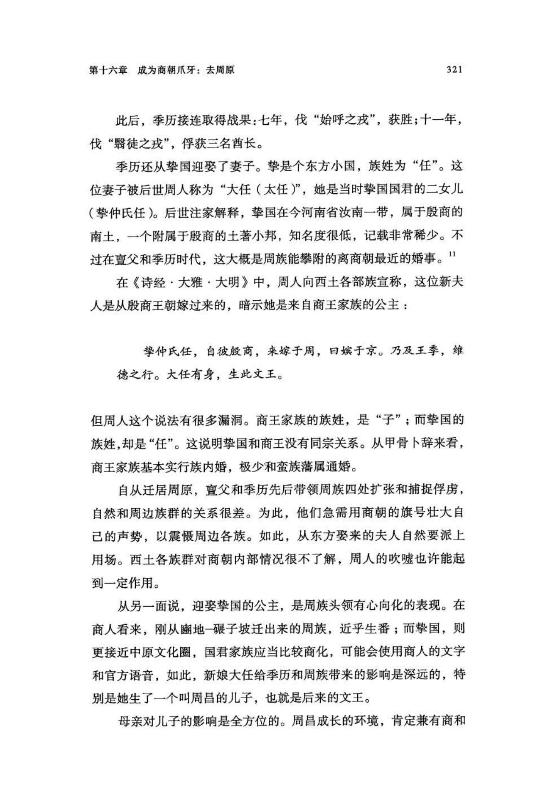
原书阅读器页 336原书物理 PDF 页 334印刷页 322
文丁王在位时间不长，可能只有十一年。[[fn:13]] 在他驾崩前不久，季历到殷都献俘，却诡异地被杀死。《竹书纪年》的记载是：“文丁杀季历。”此外，没有更多信息。事实上，文丁王和季历可能都是死于商朝内斗。下一位商王是文丁的儿子帝乙（第二十九王），他一上台就废除了商朝传统的祭祀方式，改用了一套被现代研究者称为“周祭”的制度。
当然，这个周祭和姬周族毫无关系。它的特点是不再祭祀上帝及山岳河川、龙、凤、四方等自然神，只祭祀历代先王；而且，统一规定给各位先王献祭的时间和方式，形成一张一年周期的巨大值日表，不必再临时占卜决定。而这限制了占卜师和祭司的权力。
“周祭”是商代第二十四王祖甲最先发明的，被董作宾先生称为商人的“新派”宗教。[[fn:14]] 但祖甲死后，旧宗教迅速回潮，直到末代二王帝乙和帝辛（纣王）时期，新派的“周祭”才算正式确立下来。新派宗教甚至不仅称先王为“帝”，也称在世之王为帝，所以商朝末代两王的称号分别是帝乙和帝辛（纣王）。按照商人的传统宗教，这肯定触犯了天界上帝的独尊地位，几乎是大逆不道的僭越。
商朝上层的这场宗教改革可能伴随着宫廷内的派系斗争和政变。文丁王的死因难以确定，但季历属于老王亲信，自然是新王帝乙的对立面，所以他很可能是与文丁王的势力一起被消灭的。帝乙初年重启革新，新旧两派争的就不仅是仪式，也是权力分配。老派宗教祭祀的各种自然神，可以包含一些非商族起源的神灵，这为商王拉拢异族提供了操作空间。新派却是一个更加保守的王族小群体，排斥一切没有商王族血统之人，因而季历这种当红的蛮族酋长自然下场堪忧。
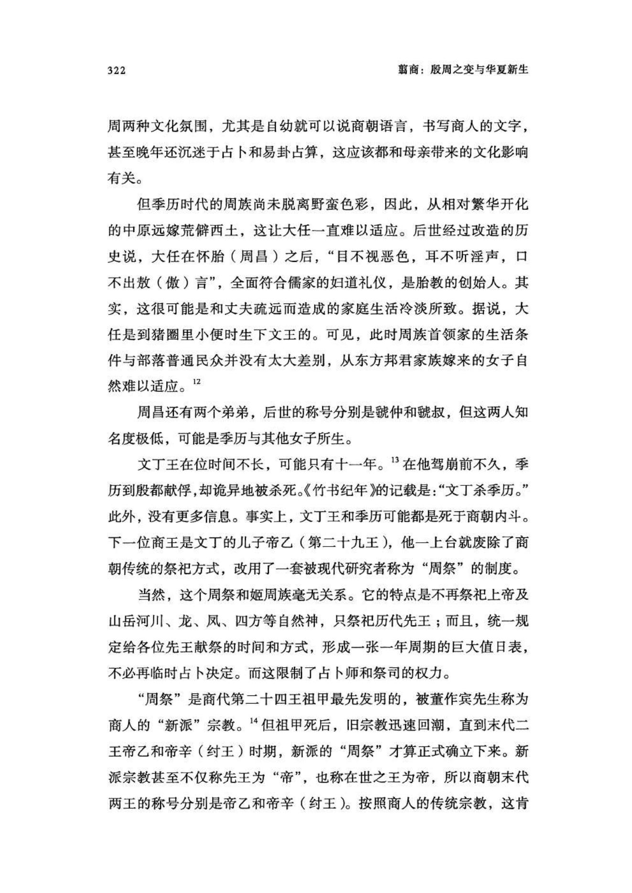
原书阅读器页 337原书物理 PDF 页 335印刷页 323
季历死时，周昌可能还不到十岁，应当会有老练的家族成员“辅政”。《竹书纪年》记载，帝乙二年，“周人伐商”。这显然是不自量力之举，所以，现实地看，也许是周人不得已介入了商朝内战。
周族的直接领导是老牛坡的崇国，而武乙王也数次亲征关中，应该和崇国关系非常密切。也许在文丁王死后，崇国曾纠集周之类的番邦介入朝廷内战，但帝乙的地位已经不可动摇，这次勤旧王之举也就只能是半途而废。
帝乙似乎没有报复西土的这些侯和伯的举动。他和父亲不一样，对西部的扩张事业可能并不感兴趣，只要羌人俘虏能一直按期送到殷都献祭给列祖列宗就行了。而且，像周这种蛮族的首领也很可能不再有获得重用的机会，并被禁止进入殷都，毕竟崇国这种西土侯国足以管理他们。所以，在甲骨卜辞里，帝乙上位之后的三四十年中，周族上层再没有获得商王赏识的记录。
幼年的周昌只能安于他的西土生活。这个小邦又经历了四十余年沉寂的时光，直到因为周昌晚年发生的某些事变，才再次进入庞大商朝的视野。彼时，商王已经换成了帝乙的儿子帝辛，也就是后世著名的商纣王。
注释
1《史记•殷本纪》：“帝武乙无道，为偶人，谓之天神。与之博，令人为行。天神不胜，乃僇辱之。为革囊，盛血，昂而射之，命日‘射天’。”
2白川静注意到了周人崇拜天的现象，他认为武乙侮辱天神是为了“侮辱周人之信仰”。但本书认为，在武乙时代姬周族还非常弱小，商朝人恐怕不会注意到它有什么信仰，更不至于蓄意侮辱其信仰，史书也没有记载武乙辱神之事发生在关中。如武乙想侮辱周族，用后稷做靶子似乎更合适。武乙之事从发生到记录成文，中间经历了较长的流变，从西周开始，宗教观念里的帝与天已经混淆不分，所以才会把武乙羞辱的上帝记录成天神。［日］白川静：《西周史略》，袁林译，三秦出版社，1992年，第15页。
〔按语：日本人挺积极〕
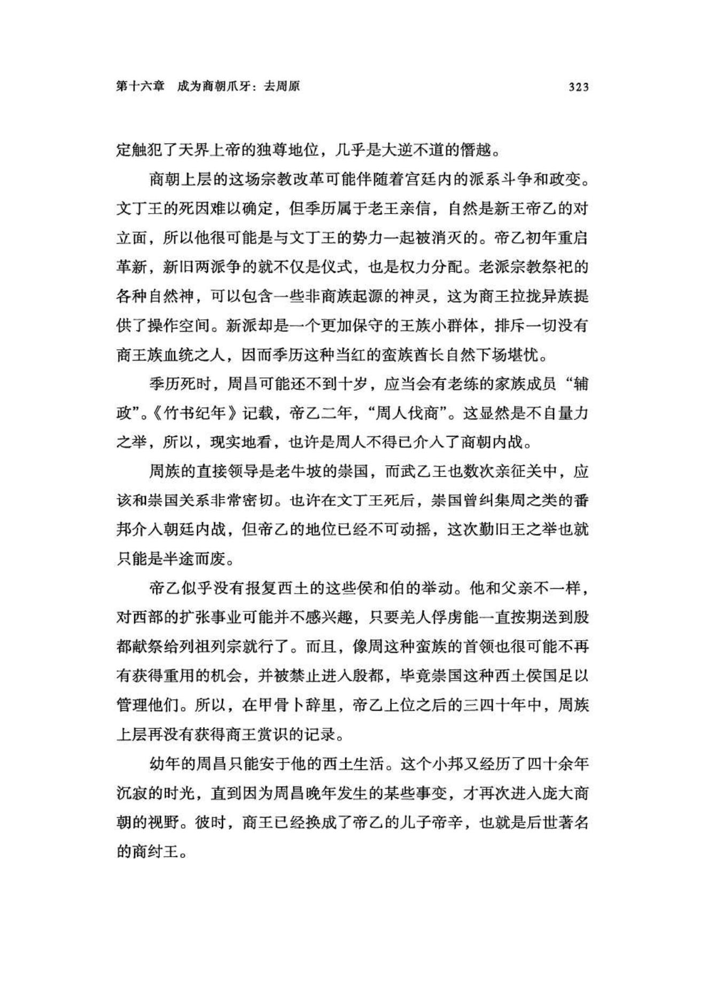
原书阅读器页 338原书物理 PDF 页 336印刷页 324
3见《孔丛子•居卫第七》。该书是西汉初年作品，司马迁写《史记》时可能部分取材于此。
4高亨认为，“依”通“殷”，此爻内容可能涉及为殷商而搬迁，“武乙与古公亶父年代亦相值，则《易》所记盖武乙亶父故事，所谓公即古公亶父欤？ ”见高亨《周易古经今注》，中华书局，1984年，第281页。
〔按语：主席给高亨写过信，认为他这部书不错。〕
5这里的“古公亶父”，曾被认为是亶父的全称。也有学者认为，“古”是表示追溯的“当年”之意，“公亶父”是称呼，其中“公”又表示长者尊称，“亶父”是日常用的称呼。
6益卦之“用凶事，无咎，有孚”。
7也许他们本是同一个部族，只是后来的古文字用了两种写法而已。
8尹盛平：《西周史征》，陕西师范大学出版社，2004年，第61页。
9西晋时期，有人盗掘战国魏王墓，挖出了很多竹简，当时的学者释读和整理了这些竹简，定名为《竹书纪年》，但在印刷术普及之前，此书失传，只有被唐宋著作引用过的一些句子保留了下来。
10《史记》等传世史书写作“太丁”，“文丁”是甲骨卜辞的写法。
11但在春秋时期，黄帝的传说被制造出来之后，任姓和姬姓都被列为黄帝之子。这可能是后世周人在抬高自己母系先祖的地位。见《国语•晋语四》：“凡黄帝之子，二十五宗，其得姓者十四人，为十二姓：姬、酉、祁、己、滕、箴、任、荀、僖、姞、儇、依是也。”
12刘向《列女传》卷一：“大任者，文王之母，挚任氏中女也。王季娶为妃。大任之性，端一诚庄，惟德之行。及其有娠，目不视恶色，耳不听淫声，口不出敖言，能以胎教。溲于豕牢，而生文王。文王生而明圣，大任教之，以一而识百，卒为周宗。君子谓大任为能胎教。”
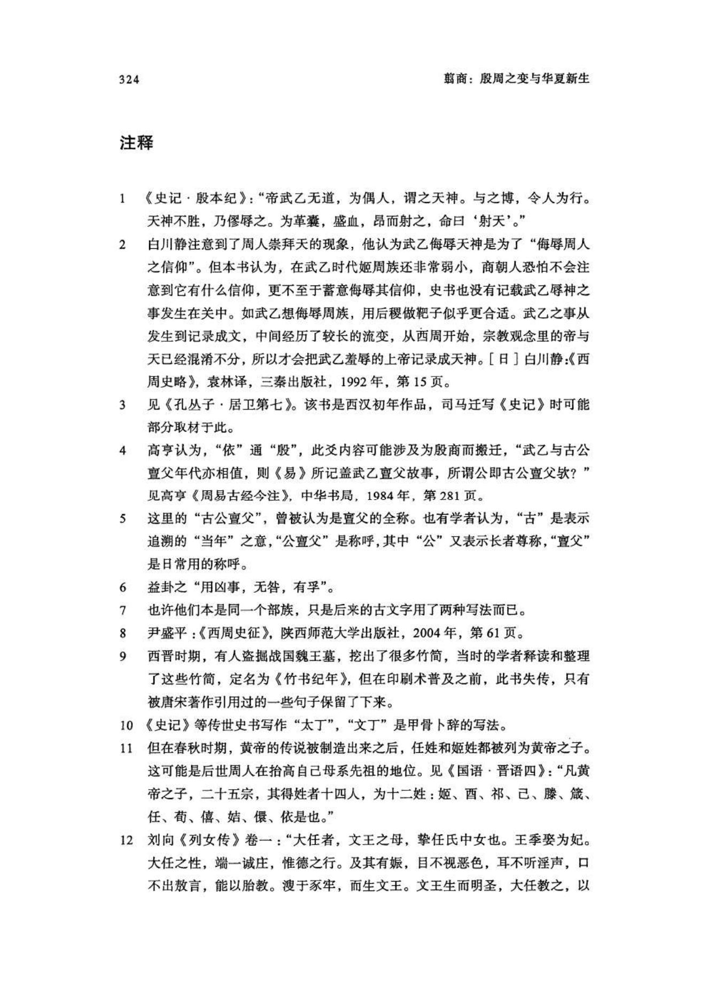
原书阅读器页 339原书物理 PDF 页 337印刷页 325
13来自“夏商周断代工程”的《夏商周年表》。参见胡厚宣、胡振宇《殷商史》，第630页。
14董作宾：《殷历谱》，（台北）“中研院”影印本，1964年。
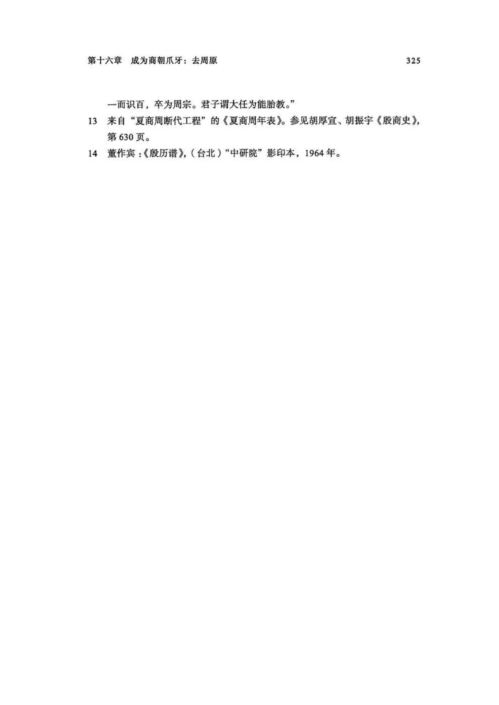
原书阅读器页 340原书物理 PDF 页 338印刷页 326

编辑札记
标记
先在正文中选择文字，再输入拼音；可用“拼音；简注”。